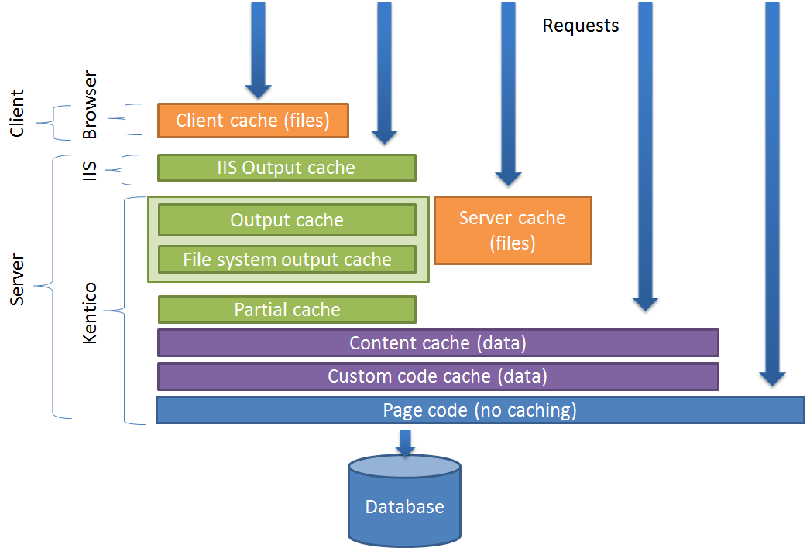

Configuring caching
Cache is a storage space that duplicates previously requested data, and allows faster access to the data in the future. Correctly using caching can significantly improve the performance of your website.
Caching the content of web pages provides two primary benefits:
Quicker loading of data (retrieving data from the cache avoids communication with slower storage spaces, such as the website's SQL database and file system)
Reduction of unnecessary page processing on repeated requests
The built-in caching mechanisms of Kentico work primarily on the server side, and utilize the application's memory to store data. The system saves data into the cache in the form of cache keys. Cache keys have unique names that exactly identify the cached content. Each key stores the cached data itself (depending on the type of the cache), as well as other information such as the expiration time or dependencies.
Cache types
Kentico provides the following types of caching:
Output cache (full page) - caches the full HTML output of pages.
Partial output cache - caches the HTML output of individual page components (web parts).
File cache - stores files and resources, such as images, CSS stylesheets or JavaScript files. Supports both server and client-side caching.
Content cache - stores structured data loaded by web parts and controls (for data sources, repeaters, etc.).
Page info cache - stores basic information about pages.
Custom code cache - allows developers to cache data used in custom code.
You can also configure external caching approaches for your web application, such as IIS Output caching, Content delivery network or Proxy caching. These are completely separate from the caching mechanisms in Kentico and are applicable to any content the application provides. See Caching page output for more information on using external caching with Kentico.
The following diagram shows the order in which the cache types are checked when handling requests (from top to bottom). If the required content is found in one of the cache layers, the system stops processing the request and sends the response without executing the page code or accessing the database. The cache types shown at the top of the diagram provide the best performance — the page response time and processing costs increase as the request progresses through the cache layers.

Cache types available in Kentico
General recommendations for configuring caching
We recommended configuring caching based on the character of the website and amount of the content so that too much memory isn’t taken by the cache.
Take the following recommendations of caching configuration as typical ones, but you should still consider altering them based on the project specifics.
Amount of data vs. cache duration
If the memory footprint of the application is generally high, the caching interval may be too high.
Combining all levels of caching with the same interval doesn’t provide value. Higher (closer to client) levels of caching should use smaller intervals than the lower levels. This allows the lower levels to pick up and save at least some overhead when higher level cache is not available.
Using distributed cache providers
Kentico currently does not support distributed cache instead of its native in-memory cache. You can use distributed cache for your custom objects, but not for native Kentico objects.
Debugging cache access
Kentico provides native cache access debugging that you can use to verify if the system works as expected with the current cache configuration.
Progressive caching
Progressive caching is an automated feature of Kentico which helps to reduce load and contention of first loads even when caching is disabled. It acts as a minimum possible period cache at the given moment. Keep it enabled unless you experience some issues with cache behavior (which may be introduced by incorrectly using caching in custom code).
Page info caching
When a visitor requests an uncached page, the system queries the database for basic information about the page, including the following:
alias path
ID and name
page metadata and other properties
SKU information (for products)
workflow information
The Page info cache stores the retrieved information in the application's memory, which allows quicker access on subsequent requests. The system reuses the information multiple times during the processing of a single page, so page info caching is an important factor in the website's performance. Page info caching cannot cause sites to display outdated information. The system automatically clears the cache for pages that are modified.
You can change the expiration time of the page info cache:
Open the Settings application.
Expand the System -> Performance category.
Type a number of minutes into the Cache page info (minutes) setting. Do NOT set the value lower than 10 minutes.
Recommended settings:Smaller sites - 60 minutes to 1 day (1440 minutes).
Larger sites - 10 to 60 minutes.
Save the settings.
When a user requests a page, the basic information stays in the cache for the specified number of minutes, or until someone modifies the related page.
Tip: You can view the cache keys that store page info through the cache debugging interface. The names of page info cache keys begin with pageinfo or pageinfobyurl.
Clearing the cache
To delete all data from the application's cache:
Open the System application.
On the General tab, click Clear cache.
The system removes all cached content managed by Kentico.